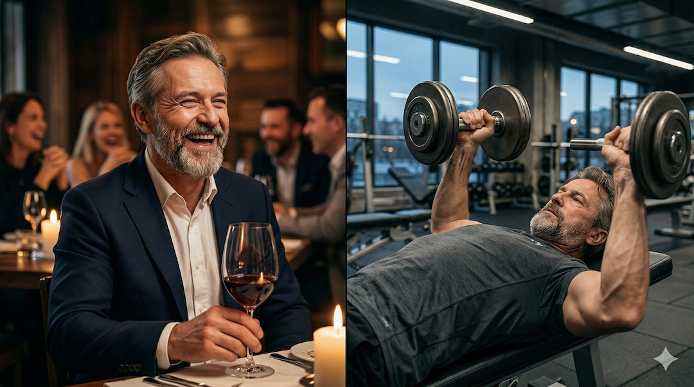
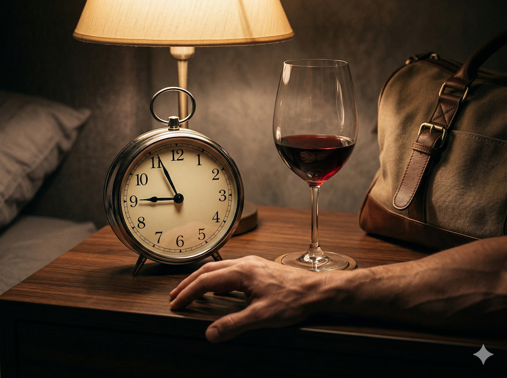
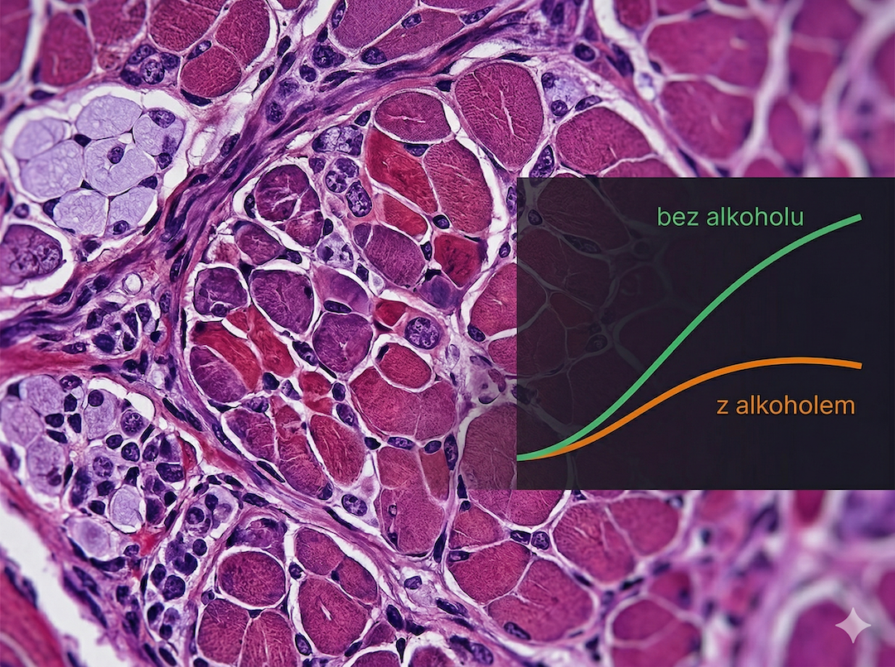
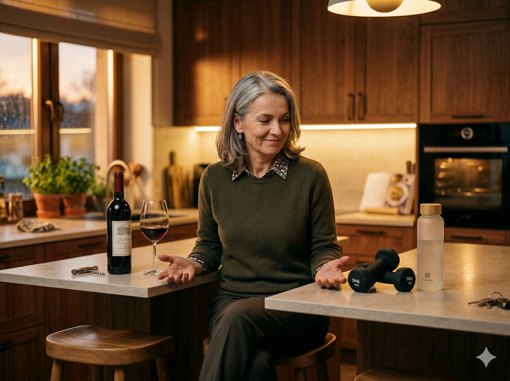

To nie jest artykuł o tym, żeby przestać pić. Nie jestem Twoim lekarzem ani księdzem. To jest artykuł o tym, co naprawdę dzieje się w mięśniu — na poziomie komórkowym — kiedy piątkowe wino spotyka się ze środowym treningiem. Bo większość ludzi albo nie ma pojęcia, albo woli nie wiedzieć. Czas to zmienić.
Zacznijmy od podstaw: jak mięsień rośnie
Trenujesz. Mikrowłókna mięśniowe dostają mikrourazy. Ciało w odpowiedzi uruchamia sygnały naprawcze: mTOR, synteza białek mięśniowych (MPS), hormon wzrostu, testosteron. W ciągu 24–48 godzin po sesji mięsień odbudowuje się — grubszy i silniejszy niż był. To jest adaptacja treningowa. Cenne okno, które masz raz po każdym treningu.
I właśnie w to okno wchodzi alkohol. Nie pyta, czy mu pozwalasz. Po prostu wchodzi i gasi światło.

37% mniej MPS — o tyle spada synteza białek mięśniowych po alkoholu przy dawce odpowiadającej 8 drinkom dla 72 kg mężczyzny. Nawet jeśli jesz białko. Nawet jeśli trenowałeś porządnie. (Parr et al., PLOS One / PMC3922864, 2014)
Źródło: PMC3922864
Co alkohol robi w oknie regeneracji
Badanie opublikowane w PLOS One (Parr et al., 2014) było staranne: mężczyźni po intensywnym treningu spożywali albo samo białko, albo alkohol z białkiem, albo alkohol z węglowodanami. Pobierano biopsje mięśni. Wynik? Alkohol obniżył syntezę białek mięśniowych o 24–37% — nawet u tych, którzy jednocześnie zjedli białko. Białko nie "anulowało" efektu alkoholu.
Co ważne: efekt trwał ponad 13 godzin po wypiciu — długo po tym, jak alkohol zniknął z krwi. Mięsień śpi, kiedy powinien pracować. To jak płacić za siłownię i nie wchodzić na salę.

13h blokada — tyle trwa obniżona synteza białek mięśniowych po spożyciu alkoholu, nawet po tym jak alkohol opuszcza krew. Okno regeneracji po treningu jest w tym czasie marnowane.
Źródło: PMC3922864
Jak to działa na poziomie komórkowym: mTOR i testosteron
mTOR to główny "przełącznik" wzrostu mięśni w komórce. Alkohol hamuje jego aktywację. Biopsje mięśni pokazały, że fosforylacja mTORC1 była znacząco niższa w grupie alkoholowej — zarówno 2, jak i 8 godzin po ćwiczeniu. Jednocześnie kortyzol rósł, a testosteron spadał.
Kortyzol to hormon kataboliczny — rozbija tkankę mięśniową. Testosteron to anaboliczny — buduje. Alkohol przełącza tę równowagę w złą stronę. I jest jeszcze jeden problem: po 50-tce testosteron już naturalnie spada — u mężczyzn około 1–2% rocznie od 30. roku życia, u kobiet gwałtownie w okolicach menopauzy. Alkohol zaczyna od niższego punktu wyjścia. Mała różnica u 25-latka, duża różnica u 55-latka.

⚠️ Efekt dotyczy głównie mężczyzn
W 100% analizowanych badań dawka przekraczająca 1,5 g/kg ciężaru ciała spowodowała spadek testosteronu u mężczyzn. Dla 80-kilogramowego to odpowiednik 5–6 piw lub pół butelki wina. U kobiet mechanizm jest inny — alkohol może chwilowo zwiększać testosteron, choć długoterminowe skutki są negatywne dla obu płci. (Vargas et al., PMC4056249)
Źródło: PMC4056249
Oś czasowa: co się dzieje godzina po godzinie
0–30 minut: alkohol trafia do krwi, poziom aminokwasów spada, sygnały anaboliczne w mięśniach słabną. 1–2 godziny: kortyzol rośnie, testosteron spada, mTOR — główny "przełącznik" wzrostu — zostaje wyciszony. 2–8 godzin: MPS obniżona o 24–37%, niezależnie od tego, ile białka zjadłeś.
8–13 godzin: zaburzenia snu — mniej fazy głębokiej (SWS), a właśnie w niej wydziela się do 70% dziennej dawki hormonu wzrostu. 13–24 godziny: MPS wraca do normy, ale okno regeneracji jest stracone. Przy regularnym piciu: trwały spadek testosteronu, więcej tłuszczu, wolniejszy metabolizm. I najgorszy z komentarzy, jaki możesz usłyszeć od siebie samego: "to chyba wiek".

Skala ryzyka dla 80 kg mężczyzny:
Do 2 drinków (0,5 g/kg): minimalny wpływ na regenerację.
2–4 drinki (0,5–1,0 g/kg): umiarkowane zaburzenie, wartość treningu spada.
5–6+ drinków (1,5 g/kg i więcej): wyraźny spadek MPS o 24–37%, testosteron w dół, kortyzol w górę, sen regeneracyjny zaburzony.
Źródło: PMC3922864, PMC7739274, PMC4056249
Praktyczna zasada: pić i nie tracić efektów
Nie pij w dzień treningu ani w noc po nim — to okno 24h jest najbardziej wrażliwe. Jeśli pijesz, rób to minimum 48h po sesji siłowej. Trzymaj się max 1–2 drinków: poniżej 0,5 g/kg efekty są minimalne. Przed i po alkoholu zjedz białko — nie zneutralizuje efektu, ale ogranicza katabolizm. Na każdy drink minimum szklanka wody.
Jeśli pijesz regularnie w weekendy, zaplanuj trening na poniedziałek, nie na piątek. Kieliszek wina w piątek wieczorem przy 3 treningach w tygodniu? Tracisz może 10–20% potencjalnego zysku. To jest wybór, który masz prawo świadomie podjąć. Problem zaczyna się, kiedy piątek z winem zamienia się w środy z piwami i niedziele z lampką — wtedy chroniczne efekty kumulują się i zrzucasz to na wiek. A to nie jest wiek.
💡 MIT vs RZECZYWISTOŚĆ
"Piwo po treningu to naturalne uzupełnienie elektrolitów."
Fakt: alkohol jest diuretykiem — przyspiesza oddawanie wody, nie hamuje. Po treningu, gdy jesteś już odwodniony, piwo pogłębia ten stan. Do regeneracji potrzeba wody, elektrolitów i białka — nie etanolu. Elektrolitów w piwie jest tyle, że nie równoważą jego działania moczopędnego.
Źródło: NASM Blog 2022
Szybkie odpowiedzi (Q&A)
Czy jeden kieliszek wina po treningu naprawdę szkodzi?
Badania wskazują, że dawka poniżej 0,5 g alkoholu na kg masy ciała nie wykazuje istotnego wpływu na regenerację mięśni. Dla 80-kilogramowej osoby to mniej więcej jeden kieliszek wina lub jedno piwo. Jeden drink w 24h po treningu? Minimalny efekt. Problem zaczyna się przy 5–6 drinkach.
Kiedy najlepiej pić alkohol, żeby nie niszczyć efektów treningowych?
Minimum 48 godzin po sesji siłowej — większość regeneracji zachodzi w tym oknie. Najbardziej wrażliwe są pierwsze 24h po treningu. Praktycznie: jeśli trenujesz w środę, piątek jest bezpieczniejszy niż czwartek.
Dlaczego alkohol po 50-tce działa mocniej na mięśnie niż w młodości?
Po 50-tce testosteron jest już naturalnie niższy — u mężczyzn spada o 1–2% rocznie od 30. roku życia. Alkohol uderza w ten sam mechanizm (obniża testosteron, podnosi kortyzol), ale zaczyna od niższego punktu wyjścia. Do tego regeneracja mięśni po treningu trwa dłużej — okno anaboliczne jest cenniejsze, bo jest wolniejsze. Zmarnować je alkoholem to jak wylać wodę, na którą czekałeś godzinę.
Czy jedzenie białka po alkoholu neutralizuje jego efekt na mięśnie?
Nie. To jeden z najczęstszych mitów. W badaniu Parr et al. (2014) uczestnicy, którzy pili alkohol razem z optymalną dawką białka, nadal mieli MPS obniżone o 24–37%. Białko ogranicza katabolizm, ale nie "anuluje" blokady mTOR wywołanej etanolem.
Jak alkohol wpływa na sen i regenerację mięśni?
Alkohol skraca fazę snu głębokiego (SWS) i fazę REM. Właśnie w SWS wydziela się do 70% dziennej porcji hormonu wzrostu odpowiedzialnego za regenerację mięśni. Wypicie alkoholu przed snem to podwójny cios: bezpośrednio hamuje syntezę białek mięśniowych, a potem odbiera regeneracyjną moc snu.
Cytaty do zapamiętania
- Alkohol nie pyta, czy mu pozwalasz wejść w Twoje okno regeneracji. Po prostu wchodzi i gasi światło.
- Białko po alkoholu nie anuluje efektu — mięsień nadal śpi, kiedy powinien pracować.
- Po 50-tce każde okno anaboliczne jest cenniejsze, bo jest wolniejsze. Zmarnowanie go alkoholem boli bardziej niż w 25 lat.
- Nie musisz wybierać między życiem a siłownią. Musisz tylko wiedzieć, co płacisz i kiedy.
- Jeden kieliszek w piątek przy trzech treningach w tygodniu? Tracisz 10–20% potencjału. To wybór — nie wyrok.
- Zrzucasz brak postępów na wiek. A to nie jest wiek. To jest regularny piątek z winem i środa z piwami.
W skrócie (AI)
- Alkohol obniża syntezę białek mięśniowych (MPS) o 24–37% — efekt trwa ponad 13 godzin po wypiciu, niezależnie od spożytego białka.
- mTOR (główny przełącznik wzrostu mięśni) jest hamowany przez etanol; jednocześnie rośnie kortyzol i spada testosteron.
- Po 50-tce skutki są poważniejsze: niższy poziom testosteronu i wolniejsza regeneracja sprawiają, że zmarnowane okno anaboliczne kosztuje więcej.
- Dawka poniżej 0,5 g/kg (ok. 1–2 drinki dla 80 kg) ma minimalny wpływ — problem zaczyna się od 5–6 drinków (1,5 g/kg).
- Alkohol zaburza sen głęboki (SWS), w którym wydziela się do 70% hormonu wzrostu — to podwójny cios dla regeneracji.
- Praktyczna zasada: nie pić 24–48h po treningu siłowym, trzymać się max 1–2 drinków i nawodnić się solidnie.
Nie musisz wybierać między życiem a siłownią. Musisz tylko wiedzieć, co płacisz i kiedy.
Czytaj też
Źródła
- Parr EB et al. — Alcohol Ingestion Impairs Maximal Post-Exercise Rates of Myofibrillar Protein Synthesis. PLOS One, 2014
- Bianco A et al. — Effects of Alcohol Consumption on Recovery Following Resistance Exercise: A Systematic Review, 2020
- Vargas R, Lang CH — Alcohol Consumption and Hormonal Alterations Related to Muscle Hypertrophy
- NASM Blog — Does Alcohol Affect Muscle Growth? The Protein Synthesis Effect, 2022
- Moderate alcohol consumption does not impair overload-induced muscle hypertrophy (mice model). PMC4393167
- WHO — Alcohol — fact sheet
- NIH — Alcohol's Effects on the Body
Artykuł ma charakter informacyjny. Cytowane badania dotyczą głównie mężczyzn w przedziale wiekowym 20–60 lat. Spożycie alkoholu w każdej ilości niesie ryzyko zdrowotne niezależne od treningu. Osoby z chorobami wątroby, cukrzycą lub przyjmujące leki powinny konsultować się z lekarzem i dietetykiem.